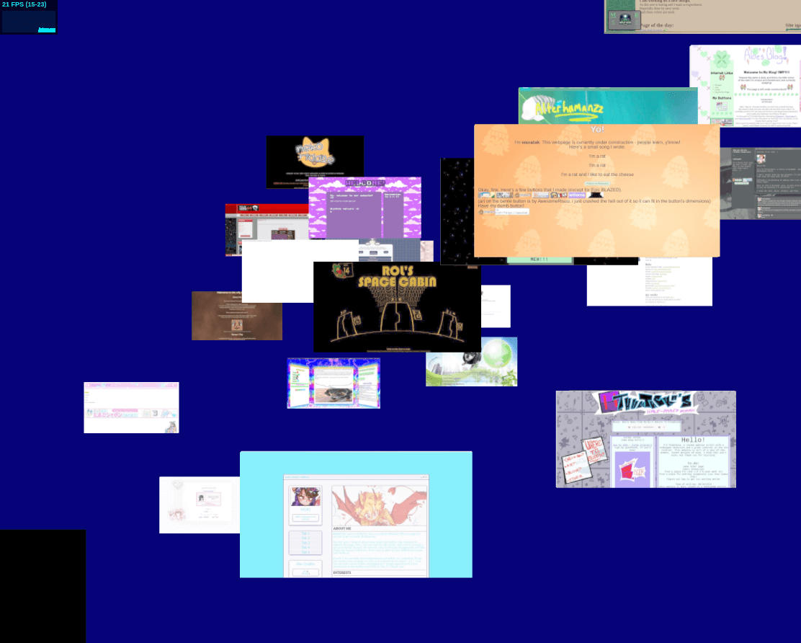

My main goal with bebop.nekoweb.org is to create a 3D, interactive
exploration experience similar to the
outernet
scene from Cowboy Bebop:
In the original, I assume that most of those 2D windows are sites you can
visit. In my version of the outernet, each of these windows is going to be
an actual Nekoweb site. You'll be able
to click on the window to visit that Nekoweb site.
How to get a screenshot of each Nekoweb site? This part is already done
for me. On nekoweb.org/explore
you can see that most sites already have a generated screenshot. The URL
follows the pattern of https://nekoweb.org/screenshots/<username>/index_large.jpg
where <username> is a Nekoweb username.
https://nekoweb.org/screenshots/bebop/index_large.jpg
should give you the screenshot for bebop.nekoweb.org for example:
Getting the screenshots for Nekoweb sites wasn't as easy as hoped. The CORS
policy on the https://nekoweb.org/screenshots/<username>/index_large.jpg
images is set to https://nekoweb.org which meant that
https://bebop.nekoweb.org scripts aren't allowed to fetch those
resources. So instead I just download my own copies of these images when I
build the site. I maybe could have asked the Nekoweb maintainers to loosen up the
CORS policy on these images but I wanted to just get this boring stuff over with.
By the way, I did get permission to use these screenshots. I proposed
the outernet idea on the Nekoweb Discord and dimden said
"you probably can if it's done nicely".
I also had to switch over to a deploy workflow based on GitHub Actions.
It took a while to get the big file API working but it's all good now.
Basic UX is now working!

20240819: Archives
I went down a small rabbithole trying to get the site working on the Wayback
Machine. I wanted to take snapshots as the site progresses. Turns out the
Wayback Machine is really bad at handling JS imports. That's annoying. I guess
I'll just do some screencasts from time to time.
20240820: Fish art
The original outernet has a bunch of fun fish floating around. Not
sure how I'll recreate those.